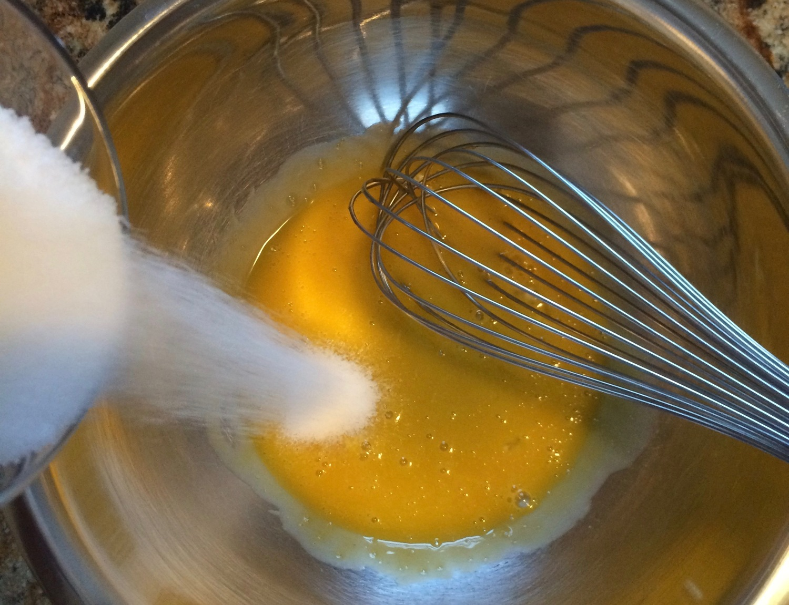
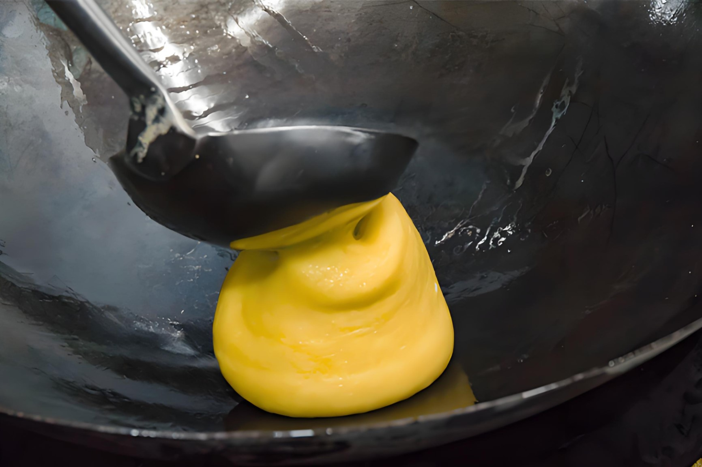

Description:
Sanbuzhan is a traditional Chinese dessert originating from Shandong Province. The name "Sanbuzhan" literally means "three non-stick" or "three don't stick," referring to its unique characteristic of not sticking to the pan, chopsticks, or teeth. The dessert is made from eggs, sugar, and starch, typically corn starch, and is fried into a golden-brown shape.
-
Serving Size:
1~2 people.
-
Cooking time:
No need to prep. 15 minutes in total.
-
Equipment Needed:
Stirring tool, Non-stick pan
Ingredient:
5 pcs egg yolk, 50g sugar, 0.5g salt, 30g tapioca flour, 150g water, 20ml flower oil / corn oil.
Instructions:
-
1）Mix the egg yolk with sugar and salt, then add in water and stir well.
-

-
2）Add in tapioca flour in 3 times, stir well.
- 
-
3）Heat the non-stick pan at low heat, add in 10ml flower oil, add in (2) and keep stirring for 5 minutes. Then add in another 10ml flower oil, and stir it about 3-5 minutes.
- 
-
4）Serve it warm and enjoy!
-

-
5) If you have leftovers, store them in an airtight container in the refrigerator, where they can usually keep for 2–3 days. You can reheat leftovers in a microwave or oven to restore some freshness.